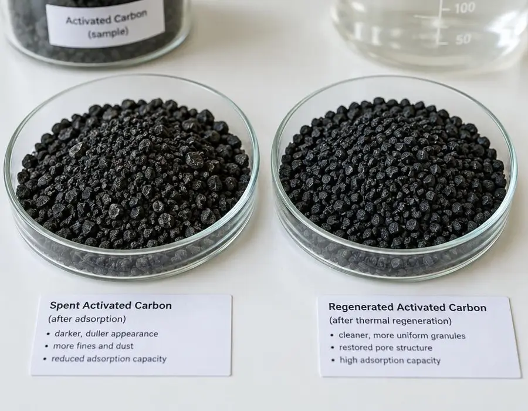

흡착성능 저하
사용 과정에서 오염물질을 흡착하며 성능이 점차 떨어집니다.
활성탄은 사용 과정에서 오염물질을 흡착하면서 점차 흡착성능이 저하됩니다. 그러나 사용이 완료된 활성탄이 반드시 폐기되어야 하는 것은 아닙니다.
WIFINETECH은 사용 후 활성탄을 회수하고 상태를 분석하여 재생 가능 여부를 판단한 후, 적절한 재생공정을 통해 흡착성능을 회복시켜 다시 활용할 수 있도록 합니다.
회수와 재생을 거쳐 흡착성능을 되살리고, 품질기준과 적용 적합성을 확인한 뒤 산업현장에 재사용합니다.

사용 과정에서 오염물질을 흡착하며 성능이 점차 떨어집니다.
회수한 활성탄의 상태를 분석해 재생 가능 여부를 확인합니다.
재생공정을 거쳐 흡착성능을 회복한 뒤 다시 산업현장에 투입됩니다.
활성탄의 회수와 재사용을 통해 자원의 선순환 구조를 구축하고 고객사의 지속가능한 환경경영을 지원합니다.
사용이 완료된 폐활성탄 회수
폐활성탄의 상태 및 재생 가능성 확인
이물질 제거 및 재생공정을 위한 전처리
흡착된 물질을 제거하고 세공구조·흡착성능 회복
흡착력 · 수분 · 회분 · 입도 등 주요 품질항목 확인
품질기준을 충족한 재생 활성탄을 적합한 용도에 재활용
각 단계의 이해를 돕는 공정 개념 이미지입니다.
 01
01 02
02 03
03 04
04재생 후 주요 품질항목을 확인하고, 사용 목적에 맞는지 검토합니다.
사용 후 활성탄을 폐기물로 끝내지 않고 다시 산업자원으로 활용합니다.
재생 가능한 활성탄을 회수·재활용함으로써 폐기되는 활성탄의 양을 줄이는 데 기여합니다.
기존 활성탄을 재생하여 활용함으로써 새로운 활성탄 생산에 필요한 원료와 자원의 사용을 줄일 수 있습니다.
사용 조건과 재생 가능 여부에 따라 신탄 교체 중심의 운영방식과 비교하여 활성탄의 Life Cycle Cost 절감에 기여할 수 있습니다.
활성탄의 회수와 재사용을 통해 자원의 선순환 구조를 구축하고 고객사의 지속가능한 환경경영을 지원합니다.
사용 환경과 요구 성능을 함께 검토하여 적합한 제품과 공정을 제안합니다.